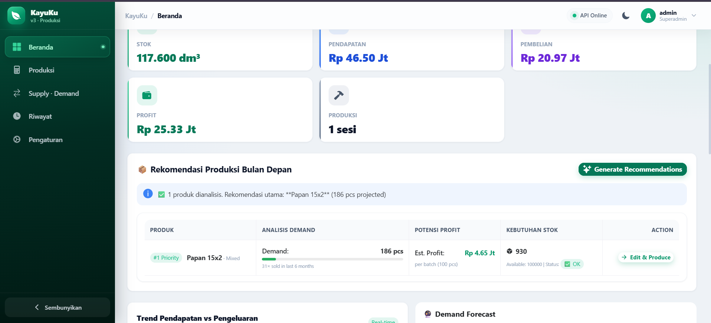
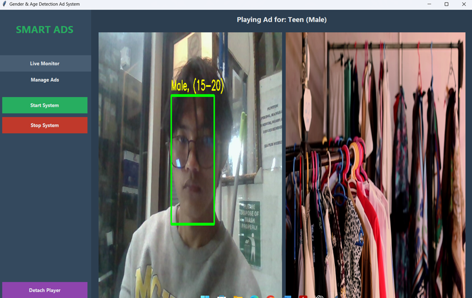

Open to opportunities
Hi, I'm Rahmat Hidayat
Software Engineer|
Computer Engineering graduate with a strong interest in software development, machine learning, and cloud technology. I build web applications, APIs, and data-driven solutions that solve real problems.
3.82GPA / 4.00
2+Featured Projects
3 moIndustry Internship
1Org. Co-Founder
01 — About
Turning ideas into working software
I'm a Computer Engineering graduate from Universitas Kebangsaan Republik Indonesia with a strong interest in software development, machine learning, and cloud technology.
My experience spans web application and API development, as well as applying machine learning concepts to real software solutions — from predicting production output with Random Forest to detecting audiences in real time with computer vision.
I enjoy solving problems analytically, learning quickly, and collaborating effectively both independently and within a team.
02 — Skills
Tools & technologies I work with
Web & API
Cloud & Systems
03 — Experience
Where I've grown
Internship — Digital Display Engineering
Urban Visual Media · Bandung
A company specializing in LED displays, videotrons, and digital signage — covering installation, configuration, content management, and maintenance.
- Assisted with installation, configuration, and troubleshooting of LED Display and Videotron systems.
- Developed a real-time gender and age detection system using Python, OpenCV, and deep learning models.
- Configured LED displays with Colorlight controllers and LEDVision — pixel mapping, resolution, brightness, and display settings.
- Supported field technicians with hardware installation, cabling, power supply checks, and display synchronization.
Co-Founder — Robotic UKRI
Universitas Kebangsaan Republik Indonesia · Bandung
A student organization focused on robotics, programming, and technology development through collaborative projects, training, and technical activities.
- Developed and organized learning materials for robotics and programming to support member training.
- Collaborated on technical activities to help members build practical skills.
Bachelor's Degree — Informatics Engineering
Universitas Kebangsaan Republik Indonesia · Bandung
Graduated with a GPA of 3.82 / 4.00. Completed various projects in software development, web applications, APIs, and machine learning.
04 — Projects
Selected work
01

Kayuku
Web App · Machine LearningA web-based wood production management application that integrates a Random Forest model to predict production output based on log dimensions and wood characteristics.
- Production data management & wood volume calculation
- Financial tracking and demand forecasting
- ML-driven production output prediction
02

Smart Ads
AI · Computer VisionAn AI-powered advertising system that detects faces and estimates audience gender and age in real time, then selects and displays relevant ads on LED displays based on demographics.
- Real-time face detection & demographic estimation
- Automated ad selection based on audience data
- Integrated with LED display playback systems
Internship · 2025
05 — Contact
Let's build something together
I'm currently open to opportunities in software engineering, machine learning, and cloud computing. Feel free to reach out — I'd love to hear from you.